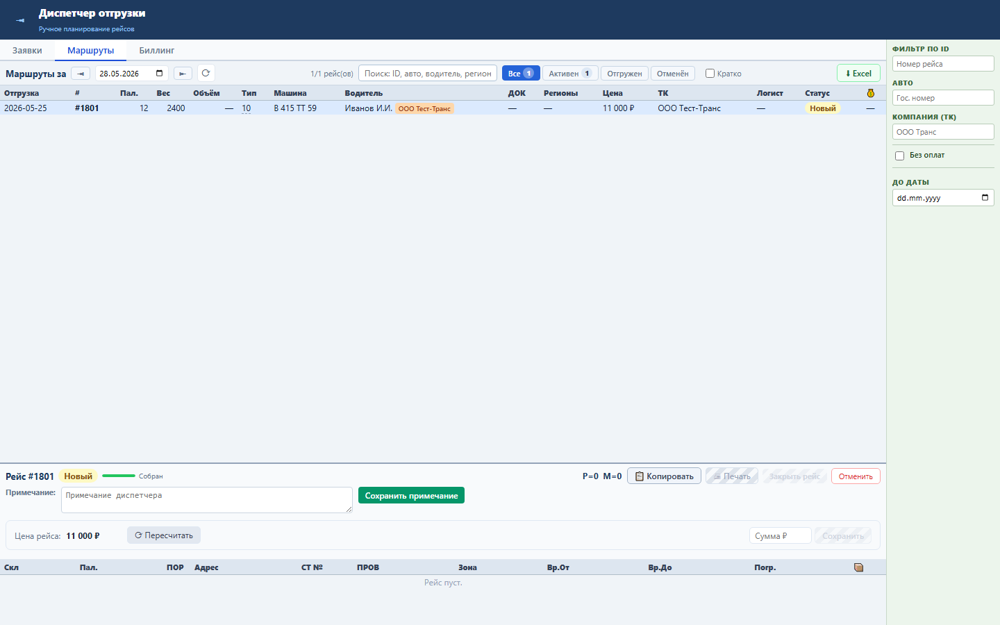
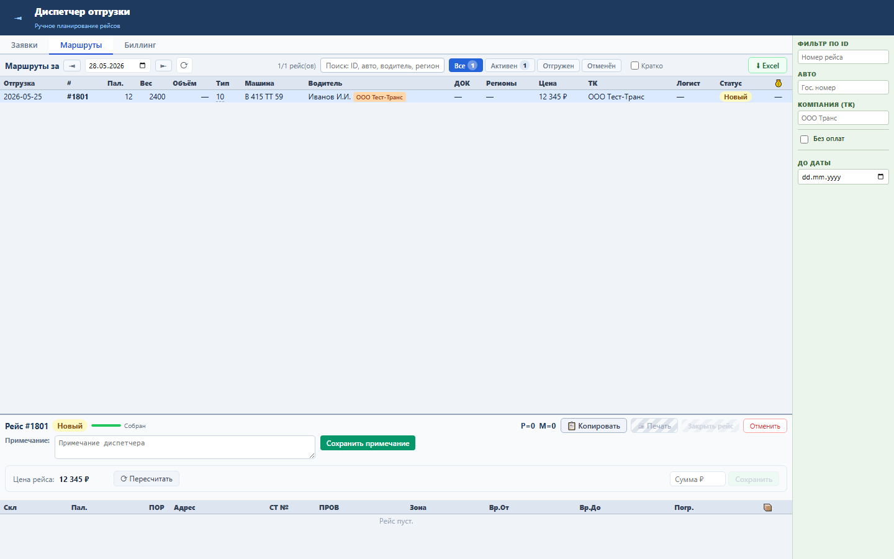

Зачем этот блок
Цена рейса нужна для корректного счета ТК. Диспетчер может пересчитать цену по нормативам или задать согласованную сумму вручную.
Как работать


Бизнес-процессы
- Расчет цены по нормативам.
- Ручная корректировка по договоренности.
- Использование цены при выставлении счета.
Результат проверки
Sprint 18 закрыт: backend tests 11 passed, UI smoke passed, load NFR passed.